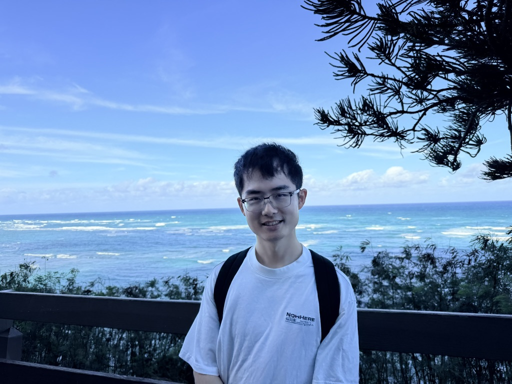

|
 |
Senior Research Scientist |
I am a Senior Research Scientist in Ranking and Foundational AI at Meta, based in Bellevue, WA. My work focuses on optimization algorithms for large-scale machine learning, spanning bilevel and minimax optimization, federated learning, and their applications to industrial-scale recommendation and retrieval systems. I completed my Ph.D. in Electrical and Computer Engineering at UC Davis in 2022, advised by Shiqian Ma and Lifeng Lai, where I worked on general optimization theory and algorithm design. At Meta, I have led research on semantic ID and embedding representation stability, work that earned an oral presentation at RecSys 2025 and was adopted into production recommendation pipelines, and I have developed and deployed optimization methods such as Shampoo, DiLoCo, and Muon to improve training convergence and infrastructure efficiency at scale. My research has been published at ICML, NeurIPS, ICLR, AISTATS, RecSys, JMLR, and TMLR, and I enjoy bridging theoretical advances in optimization with the practical demands of production ML systems.
B.S. in Applied Physics, University of Science and Technology of China, 2013 - 2017.
Ph.D. in Electrical and Computer Engineering, University of California, Davis, 2017 - 2022.
Advisors: Shiqian Ma, Lifeng Lai
Thesis: Minimax Problems in Optimal Transport: Algorithm Design and Convergence Analysis
Optimization Algorithms for Large-Scale Model Training
Minimax, Bilevel, and Federated Optimization
Representation Learning for Recommendation Systems (Semantic ID, Tokenization)
Generative Modeling for Retrieval and Recommendation
Feed m Birds with One Scone: Accelerating Multi-task Gradient Balancing via Bi-level Optimization, 2026.
Xuxing Chen, Yun He, Jiayi Xu, Minhui Huang, Xiaoyi Liu, Boyang Liu, Fei Tian, Xiaohan Wei, Rong Jin, Sem Park, Bo Long, Xue Feng
Yun He, Xuxing Chen, Jiayi Xu, Renqin Cai, Yiling You, Jennifer Cao, Minhui Huang, Liu Yang, Yiqun Liu, Xiaoyi Liu, Rong Jin, Sem Park, Bo Long, Xue Feng
Efficient Retrieval Scaling with Hierarchical Indexing for Large Scale Recommendation, 2025.
Dongqi Fu, Kaushik Rangadurai, Haiyu Lu, Yunchen Pu, Siyang Yuan, Minhui Huang, Yiqun Liu, Golnaz Ghasemiesfeh, Xingfeng He, Fangzhou Xu, Andrew Cui, Vidhoon Viswanathan, Lin Yang, Liang Wang, Jiyan Yang, Chonglin Sun
Escaping Saddle Points for Nonsmooth Weakly Convex Functions via Perturbed Proximal Algorithms, 2021.
Minhui Huang, Weiming Zhu
MLorc: Momentum Low-rank Compression for Memory Efficient Large Language Model Adaptation, International Conference on Artificial Intelligence and Statistics (AISTATS), 2026.
Wei Shen, Yaxiang Zhang, Minhui Huang, Mengfan Xu, Jiawei Zhang, Cong Shen
A Single-Loop First-Order Algorithm for Linearly Constrained Bilevel Optimization, Annual Conference on Neural Information Processing Systems (NeurIPS), 2025.
Wei Shen, Minhui Huang, Jiawei Zhang, Cong Shen
Enhancing Embedding Representation Stability in Recommendation Systems with Semantic ID, ACM Conference on Recommender Systems (RecSys, Industrial Track), 2025 (Oral Presentation).
Carolina Zheng, Minhui Huang, Dmitrii Pedchenko, Kaushik Rangadurai, Siyu Wang, Gaby Nahum, Jie Lei, Yang Yang, Tao Liu, Zutian Luo, Xiaohan Wei, Dinesh Ramasamy, Jiyan Yang, Yiping Han, Lin Yang, Hangjun Xu, Rong Jin, Shuang Yang
Tuning-Free Bilevel Optimization: New Algorithms and Convergence Analysis, International Conference on Learning Representations (ICLR), 2025.
Yifan Yang, Hao Ban, Minhui Huang, Shiqian Ma, Kaiyi Ji
Stochastic Smoothed Gradient Descent Ascent for Federated Minimax Optimization, International Conference on Artificial Intelligence and Statistics (AISTATS), 2024.
Wei Shen, Minhui Huang, Jiawei Zhang, Cong Shen
Achieving Linear Speedup in Non-IID Federated Bilevel Learning, International Conference on Machine Learning (ICML), 2023.
Minhui Huang, Dewei Zhang, Kaiyi Ji (the first two authors make equal contribution)
Decentralized Stochastic Bilevel Optimization with Improved Per-Iteration Complexity, International Conference on Machine Learning (ICML), 2023.
Xuxing Chen, Minhui Huang, Shiqian Ma, Krishnakumar Balasubramanian
A Riemannian Block Coordinate Descent Method for Computing the Projection Robust Wasserstein Distance, International Conference on Machine Learning (ICML), 2021.
Minhui Huang, Shiqian Ma, Lifeng Lai
Projection Robust Wasserstein Barycenters, International Conference on Machine Learning (ICML), 2021.
Minhui Huang, Shiqian Ma, Lifeng Lai
On the Convergence Analysis of Muon, Transactions on Machine Learning Research (TMLR), 2026.
Wei Shen, Ruichuan Huang, Minhui Huang, Cong Shen, Jiawei Zhang
Efficiently Escaping Saddle Points in Bilevel Optimization, Journal of Machine Learning Research (JMLR), 2025.
Minhui Huang, Kaiyi Ji, Shiqian Ma, Lifeng Lai
On the Convergence of Projected Alternating Maximization for Equitable and Optimal Transport, Journal of Machine Learning Research (JMLR), 2024.
Minhui Huang, Shiqian Ma, Lifeng Lai
Decentralized Bilevel Optimization, Optimization Letters, 2024.
Xuxing Chen, Minhui Huang, Shiqian Ma
Robust Low-rank Matrix Completion via an Alternating Manifold Proximal Gradient Continuation Method, IEEE Transactions on Signal Processing, 2021.
Minhui Huang, Shiqian Ma, Lifeng Lai
Reviewer for Journals:
Neural Computing
Journal of Scientific Computing
IEEE Transactions on Information Theory
Reviewer for Conferences:
International Conference on Machine Learning (ICML)
Conference on Neural Information Processing Systems (NeurIPS)
International Conference on Learning Representations (ICLR)
ACM SIGKDD Conference on Knowledge Discovery and Data Mining (KDD)
ACM Conference on Recommender Systems (RecSys)